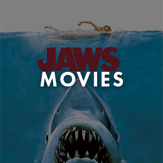

ABOUT SPIELBERG
Steven Spielberg is an infamous American film director, producer, and writer. Spielberg is behind many extremely successful and well known films, including Jaws, E.T., Indiana Jones, The Goonies, and the Jurassic Park series, to name a few.
Spielberg’s interest in films began at a young age, and one of his early works, Escape to Nowhere, won first prize at a film festival. A few years later, Spielberg created a short about hitchikers, called Amblin’, which led to a contract with Universal Studios. Spielberg attended California State College before working with Universal Studios. His work began with some smaller, but very successful projects, before his commercial success began with the release of Jaws.
Spielberg’s film trademarks include excellent production design, motivated camera movements, eye trace, superior lighting, and perfect shot angles. Spielberg is a master of film, far exceeding what most averages directors or producers ever accomplish.
